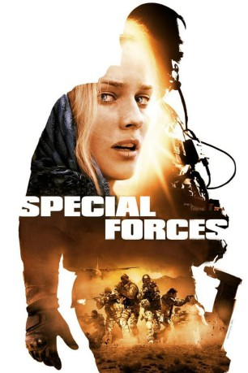
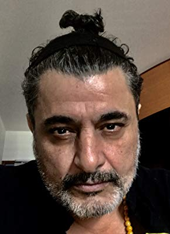

#8600 Special Forces
 
 IMDB-Wertung: 6.4 / 10
IMDB-Wertung: 6.4 / 10  Metascore: 0
Metascore: 0 
Die bekannte Journalistin Elsa wird bei einem Rechercheauftrag für eine Reportage in Afghanistan von Taliban überfallen und entführt. Ihr afghanischer Führer wird sofort getötet und die Verbrecher machen keinen Hehl daraus, das auch sie umgebracht werden soll - und das möglichst öffentlich. Ihre einzige Chance ist die Spezialeinheit, die losgeschickt wird, um sie zu retten. Dies gelingt den Spezialisten auch, aber auf dem Rückweg müssen Elsa und ihre Retter durch pakistanisches Gebiet, das von verschiedenen Stämmen brutal regiert wird. Als die Einheimischen die schwer bewaffneten Soldaten bemerken, verlieren diese langsam aber sicher die Kontrolle über die Mission. Auch Elsa wird zum Problem, da sie die militärische Vorgehensweise ihrer Befreier nicht gut heißt. Zu allem Überfluss kommen auch Elsas Kidnapper wieder auf die Spur der Gruppe und nehmen die Verfolgung auf.
Jahr: 2011
Dauer: 109 Minuten
FSK: 16
Land: Frankreich Studio: UFATonspuren:
Untertitel:
Auflösung: 1080p (1920x800) Größe: 8017 MB
Genre: Action, Drama, Krieg
Regisseur: Stéphane Rybojad
Drehbuch: Nick Damici
Soundtrack: Xavier Berthelot
Darsteller:
 Diane Kruger als Elsa
Diane Kruger als Elsa Djimon Hounsou als Kovax
Djimon Hounsou als Kovax Benoît Magimel als Tic-Tac
Benoît Magimel als Tic-Tac Denis Ménochet als Lucas
Denis Ménochet als Lucas Raphaël Personnaz als Elias
Raphaël Personnaz als Elias Mehdi Nebbou als Amen
Mehdi Nebbou als Amen- Raz Degan als Ahmed Zaief
 Tchéky Karyo als Amiral Guezennec
Tchéky Karyo als Amiral Guezennec- Morjana Alaoui als Maina
- Matthias Van Khache als Richard
- Julie Baronnie als Invitée (uncredited)
-  Alain Figlarz als Victor
- Alain Alivon als Marius
- Didier Flamand als Jacques Beauregard
- Jacques Gallo als Le Pacha
- Bernard Allouf als Le President de La Republique
- Marine Faure als La Premier Ministre
- Eric Soubelet als Patron De La Duse
- Jean-Paul Dubois als Ministre de La Défense
- Antoine Blanquefort als Ministre des Affaires Etrangeres
- Laurent Claret als Chef d'etat Major Particulier Du President
- Jeanne Bournaud als Alex
- Isabelle Vitari als Lisa
- Anne Caillon als Jeanne
- Said Said Kamolidinov als Oakley
- Nurullo Abdullayev als Le Mollah Zukhan
- Denis Braccini als Criminel de Guerre Serbe
- Gregory Fromentin als Salemani
- Neo Nojoli als Samuel
- Juliette Hospitalier als Eva
- Ambre Rybojad als Ambre
- Armaud Bouchard als Main Dalex
- Elsa Levy als La journaliste
- Jackie Fouquereau als L'ambassadeur a Khabul
- Séverin Bavarel als Journaliste 1
- Stéphanie Brongniart als Journaliste 2
- Olivier Pierre Richard als Journaliste 3
- Alexandre Brick als Journaliste 4
- Eleonore Woodward als Assistante Jacques Beauregard
- Eric Kailey als Gars 1 Barbecue
- Fabrice Laroche Joubert als Gars 2 Barbecue
Datei: X:\2011(N-Z)\Special Forces (2011, FSK16, 1920x800).mkv seit 22.03.2018
Festplatte: HD 2011(G-Z)
 Es gibt insgesamt 132 Filme in der Gruppe '2011(N-Z)'
Es gibt insgesamt 132 Filme in der Gruppe '2011(N-Z)'